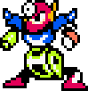

Find Familiar (Series)
Short stories regarding the (accidental) friendship started by Ellice Dalzedi and her familiar, Kindle
Go to experimentExperiments I made and can be displayed in a browser may be placed here.
Anything goes really.
Short stories regarding the (accidental) friendship started by Ellice Dalzedi and her familiar, Kindle
Go to experimentMake your own Robot Master to guard your Website and secretely take over it too
